[C/E - FCC › TCE/PR/Analista de Controle/2011 › Tributos: incidência e peso morto]Acerca da incidência de impostos sobre vendas, julgue o item a seguir (item adaptado). Item: A instituição de um imposto sobre vendas implicará aumento do preço de mercado exatamente igual ao valor do imposto, qualquer que seja a elasticidade-preço da demanda. | ❌ ERRADO A instituição de um imposto sobre vendas implicará aumento do preço de mercado exatamente igual ao valor do imposto, qualquer que seja a elasticidade-preço da demanda. 🎯 Em poucas palavras: O repasse ao preço depende das elasticidades: em regra o preço ao consumidor sobe menos que o imposto. Repasse integral só com demanda perfeitamente inelástica ou oferta perfeitamente elástica. 📖 Destrinchando o tema:
🧐 Dissecando a redação do item: [modulador absoluto] Dois absolutos — “exatamente igual” e “qualquer que seja a elasticidade” — transformam um caso-limite em regra. O caso-limite existe (demanda vertical), e é justamente a exceção que o “qualquer que seja” ignora. 😈 Para dificultar:
✍️ Reescrita correta: A instituição de um imposto sobre vendas implicará aumento do preço de mercado que depende das elasticidades-preço da demanda e da oferta, sendo igual ao valor do imposto apenas se a demanda for perfeitamente inelástica ou a oferta perfeitamente elástica. |
[C/E - Armstrong › Pré-TPS/2026 › Tributos: incidência e peso morto]Julgue o item a seguir, relativo à incidência tributária. Item: A incidência econômica de um imposto específico sobre vendas depende da elasticidade-preço relativa da oferta e da demanda. Se a demanda for perfeitamente inelástica, todo o ônus do imposto recairá sobre o produtor, pois o consumidor não reduzirá a quantidade demandada diante do aumento de preço. | ❌ ERRADO A incidência econômica de um imposto específico sobre vendas depende da elasticidade-preço relativa da oferta e da demanda. Se a demanda for perfeitamente inelástica, todo o ônus do imposto recairá sobre o produtor, pois o consumidor não reduzirá a quantidade demandada diante do aumento de preço. 🎯 Em poucas palavras: Demanda perfeitamente inelástica = consumidor que compra a mesma quantidade a qualquer preço: o imposto é repassado por inteiro e o ônus fica com o consumidor. 📖 Destrinchando o tema:
🧐 Dissecando a redação do item: [troca de ator] A 1ª frase é a regra correta e a premissa (“perfeitamente inelástica”) está certa; o erro é só o destinatário do ônus. Pista: a justificativa descreve o comportamento de quem paga o imposto. 😈 Para dificultar:
✍️ Reescrita correta: A incidência econômica de um imposto específico sobre vendas depende da elasticidade-preço relativa da oferta e da demanda. Se a demanda for perfeitamente inelástica, todo o ônus do imposto recairá sobre o consumidor, pois o consumidor não reduzirá a quantidade demandada diante do aumento de preço. |
[C/E - Armstrong › Pré-TPS/2026 › Tributos: incidência e peso morto]Julgue o item a seguir, relativo à incidência tributária. Item: Em uma indústria perfeitamente competitiva de custos constantes, a incidência de um imposto ad valorem sobre o consumo recai integralmente sobre os consumidores no longo prazo, uma vez que a curva de oferta de longo prazo da indústria é perfeitamente elástica. | ✅ CERTO Em uma indústria perfeitamente competitiva de custos constantes, a incidência de um imposto ad valorem sobre o consumo recai integralmente sobre os consumidores no longo prazo, uma vez que a curva de oferta de longo prazo da indústria é perfeitamente elástica. 🎯 Em poucas palavras: Custos constantes → oferta de longo prazo horizontal no CMe mínimo. O preço líquido do produtor não pode ficar abaixo dele, então o consumidor paga todo o imposto. 📖 Destrinchando o tema:
🧐 Dissecando a redação do item: [literalidade · detalhe] Três qualificadores sustentam o CERTO: “perfeitamente competitiva”, “custos constantes” e “longo prazo”. O “integralmente” assusta, mas aqui é exato. Retire qualquer um dos três e o item vira ERRADO. 😈 Para dificultar:
|
❌ [C/E - Armstrong › Pré-TPS/2026 › Tributos: incidência e peso morto]Julgue o item a seguir, relativo aos efeitos de tributos sobre firmas competitivas. Item: A imposição de um imposto de montante fixo (lump-sum tax) sobre todas as empresas de um mercado perfeitamente competitivo altera o custo marginal de produção de cada firma, deslocando a curva de oferta de curto prazo do mercado para a esquerda e elevando o preço de equilíbrio imediato. | ❌ ERRADO A imposição de um imposto de montante fixo (lump-sum tax) sobre todas as empresas de um mercado perfeitamente competitivo altera o custo marginal de produção de cada firma, deslocando a curva de oferta de curto prazo do mercado para a esquerda e elevando o preço de equilíbrio imediato. 🎯 Em poucas palavras: Imposto de montante fixo é custo fixo: não depende de q, não mexe no CMg e, portanto, não desloca a oferta de curto prazo. Só reduz o lucro. 📖 Destrinchando o tema:
🧐 Dissecando a redação do item: [troca de conceito] Atribui a um custo fixo o efeito de um custo variável. A cadeia causal que segue (CMg ↑ → oferta ← → preço ↑) é coerente, o que engana; o elo falso é o primeiro. Pista: “montante fixo” e “custo marginal” na mesma frase. 😈 Para dificultar:
✍️ Reescrita correta: A imposição de um imposto de montante fixo (lump-sum tax) sobre todas as empresas de um mercado perfeitamente competitivo não altera o custo marginal de produção de cada firma nem desloca a curva de oferta de curto prazo do mercado, mantendo o preço de equilíbrio imediato. |
[C/E - Armstrong › Pré-TPS/2026 › Tributos: incidência e peso morto]Julgue o item a seguir, relativo à incidência tributária. Item: Se a elasticidade-preço da demanda de mercado for perfeitamente inelástica, a introdução de um imposto específico sobre a produção recairá integralmente sobre os consumidores, e não haverá peso morto (deadweight loss) associado a esse tributo, pois a quantidade transacionada no equilíbrio permanecerá inalterada. | ✅ CERTO Se a elasticidade-preço da demanda de mercado for perfeitamente inelástica, a introdução de um imposto específico sobre a produção recairá integralmente sobre os consumidores, e não haverá peso morto (deadweight loss) associado a esse tributo, pois a quantidade transacionada no equilíbrio permanecerá inalterada. 🎯 Em poucas palavras: Demanda vertical: o preço sobe o valor inteiro do imposto (ônus 100% do consumidor) e a quantidade não muda — sem queda de quantidade, peso morto zero. 📖 Destrinchando o tema:
📈 No gráfico: 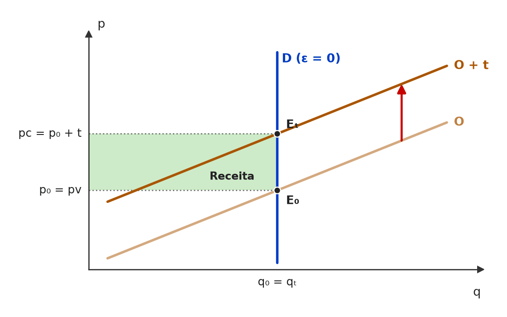 Com demanda vertical, a oferta sobe t (O → O + t) e o preço ao consumidor sobe exatamente t; o vendedor continua recebendo p₀. A quantidade não muda (q₀): o imposto é pura transferência (retângulo) e não há triângulo de peso morto. 🧐 Dissecando a redação do item: [literalidade · detalhe] Junta três conclusões corretas do mesmo caso-limite (repasse integral, quantidade constante, peso morto nulo) e liga-as pela causa certa. O “integralmente” assusta, mas é exato neste extremo. 😈 Para dificultar:
|
[C/E - Armstrong › Pré-TPS/2026 › Tributos: incidência e peso morto]Julgue o item a seguir, relativo à incidência tributária. Item: Com oferta muito elástica, qualquer imposto indireto necessariamente recai integralmente sobre consumidores. | ❌ ERRADO Com oferta muito elástica, qualquer imposto indireto necessariamente recai integralmente sobre consumidores. 🎯 Em poucas palavras: Oferta muito elástica faz o consumidor pagar a maior parte, não tudo. Repasse integral só com oferta perfeitamente elástica (εˢ = ∞). 📖 Destrinchando o tema:
🧐 Dissecando a redação do item: [modulador absoluto · troca de conceito] Três absolutos (“qualquer”, “necessariamente”, “integralmente”) apoiados num grau (“muito”) que não basta. Sempre que o item disser “muito/pouco” e concluir “integralmente”, desconfie. 😈 Para dificultar:
✍️ Reescrita correta: Com oferta muito elástica, um imposto indireto tende a recair majoritariamente sobre consumidores; o repasse integral só ocorre com oferta perfeitamente elástica. |
❌ [C/E - Nabuco › Tributos: incidência e peso morto]A respeito dos conceitos e aplicações da elasticidade, julgue o item a seguir. Item: Considerando um mercado de concorrência perfeita com uma curva de demanda decrescente, o produtor consegue repassar a totalidade de um tributo aos consumidores quando a elasticidade-preço da oferta do bem tributado é infinita. | ✅ CERTO Considerando um mercado de concorrência perfeita com uma curva de demanda decrescente, o produtor consegue repassar a totalidade de um tributo aos consumidores quando a elasticidade-preço da oferta do bem tributado é infinita. 🎯 Em poucas palavras: Oferta com elasticidade infinita é horizontal: o produtor não aceita receber um centavo a menos que p₀. Com demanda decrescente, o preço ao consumidor sobe t inteiro. 📖 Destrinchando o tema:
📈 No gráfico: 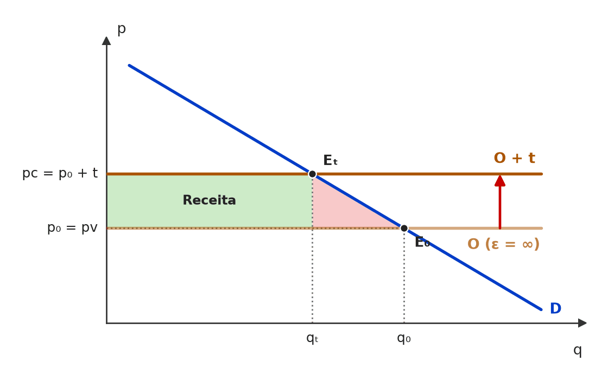 Com oferta horizontal (ε = ∞), o imposto t eleva a oferta de O para O + t: o preço ao consumidor sobe exatamente t e o produtor continua recebendo p₀. Todo o ônus fica com o consumidor; a quantidade cai de q₀ para qₜ, com peso morto. 🧐 Dissecando a redação do item: [detalhe] O item mexe com o reflexo condicionado “elasticidade infinita → quem é elástico não paga… mas o produtor perde tudo?”. Leia de quem é a elasticidade: é da oferta. Oferta infinitamente elástica protege o produtor. 😈 Para dificultar:
|
[C/E - Nabuco › Tributos: incidência e peso morto]Em relação à microeconomia, julgue o item a seguir. Item: Considerando a imposição de um tributo sobre um bem, quanto mais elástica a demanda pelo bem, maior será o peso morto e a arrecadação decorrente do imposto. | ❌ ERRADO Considerando a imposição de um tributo sobre um bem, quanto mais elástica a demanda pelo bem, maior será o peso morto e a arrecadação decorrente do imposto. 🎯 Em poucas palavras: Demanda mais elástica → a quantidade cai mais com o imposto: peso morto maior e arrecadação menor (a base tributável encolhe). Os dois andam em sentidos opostos. 📖 Destrinchando o tema:
📈 No gráfico: 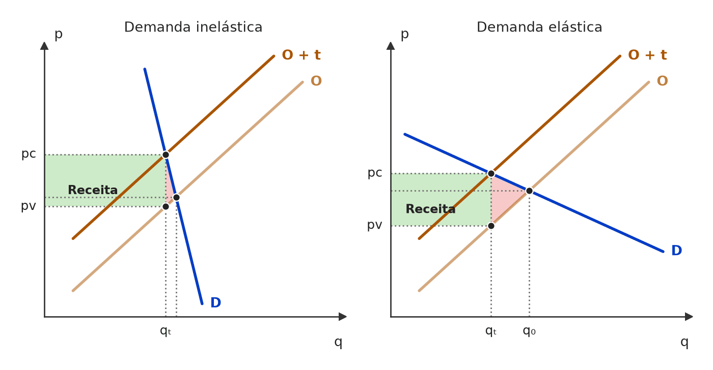 Mesma oferta, mesmo imposto t. Com demanda inelástica (esquerda), a quantidade quase não cai: receita grande e peso morto (vermelho) minúsculo. Com demanda elástica (direita), a base encolhe: receita menor e peso morto maior. 🧐 Dissecando a redação do item: [meia-verdade] A primeira metade (peso morto maior) é verdadeira; a segunda foi colada pela conjunção “e”, que estende o “maior” à arrecadação. 🔥 Itens que juntam duas grandezas num só “maior” pedem que se teste cada uma separadamente. 😈 Para dificultar:
✍️ Reescrita correta: Considerando a imposição de um tributo sobre um bem, quanto mais elástica a demanda pelo bem, maior será o peso morto e menor a arrecadação decorrente do imposto. |
[C/E - Nabuco › Tributos: incidência e peso morto]A respeito da teoria do consumidor e dos conceitos de elasticidade, julgue o item a seguir. Item: Em um mercado onde a curva de oferta é perfeitamente inelástica, a introdução de um imposto sobre as vendas recairá integralmente sobre o produtor, não havendo peso morto associado à tributação. | ✅ CERTO Em um mercado onde a curva de oferta é perfeitamente inelástica, a introdução de um imposto sobre as vendas recairá integralmente sobre o produtor, não havendo peso morto associado à tributação. 🎯 Em poucas palavras: Oferta vertical: a quantidade é fixa e os compradores não aceitam pagar mais por ela. O preço ao consumidor fica igual, o produtor recebe p₀ − t e, sem queda de quantidade, não há peso morto. 📖 Destrinchando o tema:
📈 No gráfico: 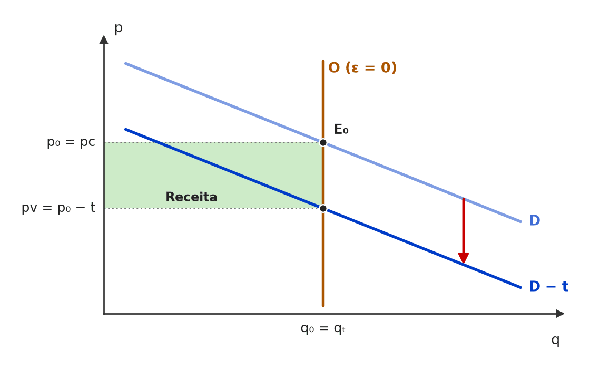 Com oferta vertical, a quantidade é fixa. Visto pelo vendedor, o imposto desloca a demanda para baixo em t (D → D − t): o consumidor continua pagando p₀ e o produtor passa a receber p₀ − t. Ônus integral do produtor, quantidade intacta, nenhum peso morto. 🧐 Dissecando a redação do item: [literalidade · detalhe] Duas conclusões corretas do mesmo caso-limite. O candidato que decorou “demanda inelástica → consumidor paga” e não lê de qual curva se trata marca ERRADO. Leia sempre qual curva é inelástica. 😈 Para dificultar:
|
[C/E - Clipping › Simuladão/2025 › Tributos: incidência e peso morto]No estudo das estruturas de mercado, a concorrência perfeita e o monopólio representam extremos analíticos com implicações distintas sobre o bem-estar social e a eficiência alocativa. Com base nesse contexto, julgue o item a seguir. Item: A introdução de um imposto específico em um mercado competitivo afeta exclusivamente os consumidores, visto que as firmas tomam o preço como dado. | ❌ ERRADO A introdução de um imposto específico em um mercado competitivo afeta exclusivamente os consumidores, visto que as firmas tomam o preço como dado. 🎯 Em poucas palavras: O ônus se reparte conforme as elasticidades da oferta e da demanda de mercado. Ser tomadora de preço é atributo da firma individual e não garante repasse integral. 📖 Destrinchando o tema:
🧐 Dissecando a redação do item: [modulador absoluto · nexo indevido] “Exclusivamente” é o erro principal; a justificativa (“visto que as firmas tomam o preço como dado”) é um fato verdadeiro sobre a firma usado como causa de algo que não decorre dele. Pista: o item fala do mercado e justifica com a firma. 😈 Para dificultar:
✍️ Reescrita correta: A introdução de um imposto específico em um mercado competitivo afeta tanto os consumidores quanto os produtores, na proporção das elasticidades-preço da demanda e da oferta de mercado. |
[C/E - Nidi/Jacqueline Bueno › Simulado Abril/2025 › Tributos: incidência e peso morto]Elasticidades e incidência tributária em concorrência perfeita. Considerando que a questão se limita a mercados de concorrência perfeita, julgue o item a seguir. Item: Um aumento no imposto sobre o consumo de um bem com demanda perfeitamente preço-elástica e oferta preço-inelástica terá incidência apenas sobre o bem-estar dos produtores, pois os consumidores somente adquirem o bem a um preço único de equilíbrio. | ✅ CERTO Um aumento no imposto sobre o consumo de um bem com demanda perfeitamente preço-elástica e oferta preço-inelástica terá incidência apenas sobre o bem-estar dos produtores, pois os consumidores somente adquirem o bem a um preço único de equilíbrio. 🎯 Em poucas palavras: Demanda perfeitamente elástica (horizontal): o consumidor não aceita preço acima do vigente, então o imposto não chega ao preço final — o produtor absorve tudo. 📖 Destrinchando o tema:
🧐 Dissecando a redação do item: [literalidade · detalhe] Item construído sobre um caso-limite. O “apenas” assusta quem associa absolutos a ERRADO, mas aqui é exato: demanda perfeitamente elástica torna a incidência sobre o consumidor nula. 🔥 A banca combina extremos (horizontal, vertical) com o modulador absoluto para testar se o candidato sabe quando ele é legítimo. 😈 Para dificultar:
|
[C/E - Nidi/Jacqueline Bueno › Simulado Abril/2025 › Tributos: incidência e peso morto]Elasticidades e incidência tributária em concorrência perfeita. Considerando que a questão se limita a mercados de concorrência perfeita, julgue o item a seguir. Item: Um aumento no imposto sobre o consumo de um bem cuja demanda e oferta tenham elasticidades unitárias incidirá apenas sobre o bem-estar do consumidor, pois as firmas conseguem repassar o tributo totalmente no novo preço de equilíbrio. | ❌ ERRADO Um aumento no imposto sobre o consumo de um bem cuja demanda e oferta tenham elasticidades unitárias incidirá apenas sobre o bem-estar do consumidor, pois as firmas conseguem repassar o tributo totalmente no novo preço de equilíbrio. 🎯 Em poucas palavras: Elasticidades iguais (|εD| = εO = 1) → o ônus se reparte ao meio entre consumidores e produtores. Repasse total exigiria demanda vertical ou oferta horizontal. 📖 Destrinchando o tema:
🧐 Dissecando a redação do item: [troca de conceito · modulador absoluto] O item usa elasticidades simétricas e conclui por uma incidência assimétrica e total. Pista: se nada distingue os dois lados, nada justifica que um pague tudo. O “apenas” e o “totalmente” só seriam válidos nos casos-limite. 😈 Para dificultar:
✍️ Reescrita correta: Um aumento no imposto sobre o consumo de um bem cuja demanda e oferta tenham elasticidades unitárias incidirá igualmente sobre o bem-estar do consumidor e o das firmas, pois cada lado arca com metade do tributo no novo preço de equilíbrio. |
[C/E - Nidi/Jacqueline Bueno › Simulado Abril/2025 › Tributos: incidência e peso morto]Elasticidades e incidência tributária em concorrência perfeita. Considerando que a questão se limita a mercados de concorrência perfeita, julgue o item a seguir. Item: Um imposto sobre o consumo de produtos viciantes tem redução pequena no bem-estar dos consumidores, uma vez que a demanda desses produtos é altamente elástica. | ❌ ERRADO Um imposto sobre o consumo de produtos viciantes tem redução pequena no bem-estar dos consumidores, uma vez que a demanda desses produtos é altamente elástica. 🎯 Em poucas palavras: Produtos viciantes têm demanda inelástica: o consumidor continua comprando quase o mesmo e paga quase todo o imposto — a perda de bem-estar dele é grande. 📖 Destrinchando o tema:
🧐 Dissecando a redação do item: [troca de conceito · nexo indevido] Dois erros encadeados: classifica a demanda como elástica (é inelástica) e, a partir disso, conclui pela perda pequena. A pista é “viciantes”: vício é o exemplo de manual de inelasticidade. 😈 Para dificultar:
✍️ Reescrita correta: Um imposto sobre o consumo de produtos viciantes tem redução grande no bem-estar dos consumidores, uma vez que a demanda desses produtos é altamente inelástica. |
[C/E - Nidi/Jacqueline Bueno › Simulado Abril/2025 › Tributos: incidência e peso morto]Elasticidades e incidência tributária em concorrência perfeita. Considerando que a questão se limita a mercados de concorrência perfeita, julgue o item a seguir. Item: Uma redução no imposto sobre o consumo de um bem com demanda preço-inelástica e oferta preço-elástica terá incidência maior sobre o bem-estar dos consumidores do que sobre o bem-estar das firmas. | ✅ CERTO Uma redução no imposto sobre o consumo de um bem com demanda preço-inelástica e oferta preço-elástica terá incidência maior sobre o bem-estar dos consumidores do que sobre o bem-estar das firmas. 🎯 Em poucas palavras: A regra da incidência vale nos dois sentidos: o lado mais inelástico paga a maior parte de um aumento e captura a maior parte de uma redução. Aqui, os consumidores. 📖 Destrinchando o tema:
🧐 Dissecando a redação do item: [contraintuitivo · detalhe] A palavra “incidência” costuma vir associada a ônus; aqui ela se aplica a um benefício (redução de imposto). Quem não percebe a simetria da regra hesita. Pista: demanda inelástica + oferta elástica = consumidor no centro do ajuste, para cima ou para baixo. 😈 Para dificultar:
|
[C/E - Nidi/Jacqueline Bueno › Simulado Abril/2025 › Tributos: incidência e peso morto]No que se refere à intervenção pública no equilíbrio dos mercados, julgue o item a seguir. Item: A imposição de um imposto sobre a margem de lucro das empresas não afeta a condição de equilíbrio de primeira ordem em nenhuma estrutura de mercado, ou seja, o ponto no qual a receita marginal é igual ao custo marginal (Rmg = Cmg). | ✅ CERTO A imposição de um imposto sobre a margem de lucro das empresas não afeta a condição de equilíbrio de primeira ordem em nenhuma estrutura de mercado, ou seja, o ponto no qual a receita marginal é igual ao custo marginal (Rmg = Cmg). 🎯 Em poucas palavras: Imposto proporcional ao lucro multiplica a função lucro por (1 − t), uma constante positiva: o máximo continua no mesmo q, onde RMg = CMg. 📖 Destrinchando o tema:
🧐 Dissecando a redação do item: [literalidade · contraintuitivo] O “em nenhuma estrutura de mercado” soa como modulador absoluto, mas é exato: a neutralidade decorre da matemática da maximização, não da estrutura. A armadilha é tratar “imposto” como sinônimo de custo marginal maior. 😈 Para dificultar:
|
[EXERC - Intensivo MM › Intensivo Pré-TPS/2024 › Tributos: incidência e peso morto]Responda à questão a seguir, sobre os efeitos de um imposto sobre o bem-estar. Questão: Indique graficamente onde identificar o que é excedente e o que é peso morto após a imposição de um imposto. | 🔵 RESPOSTA Com o imposto t, o preço pago pelo comprador sobe para pc e o recebido pelo vendedor cai para pv; a quantidade cai de q₀ para qₜ. Excedente do consumidor: área entre a demanda e pc. Excedente do produtor: área entre pv e a oferta. Receita do governo: retângulo t × qₜ. Peso morto: triângulo entre as curvas, de qₜ a q₀. 🎯 Em poucas palavras: O imposto abre uma cunha entre pc e pv; parte dos antigos excedentes vira receita do governo (retângulo) e parte se perde sem ir para ninguém (peso morto, triângulo). 📖 Destrinchando o tema:
📈 No gráfico: 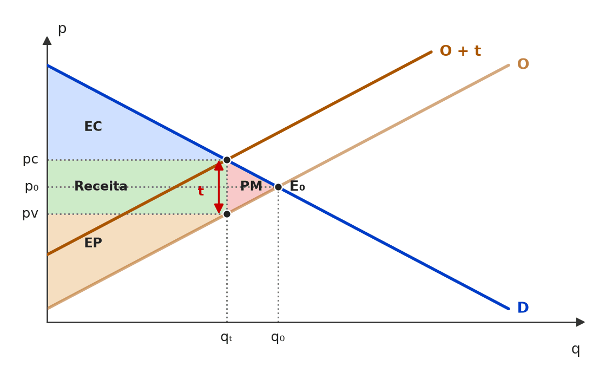 O imposto t abre uma cunha entre o preço pago pelo comprador (pc) e o recebido pelo vendedor (pv). EC (azul) e EP (ocre) são os excedentes que sobram; o retângulo verde é a receita do governo (t × qₜ); o triângulo vermelho (PM) é o peso morto — trocas que deixam de ocorrer entre qₜ e q₀. 🧐 Dissecando a redação do item: [exercício aberto] Em C/E, a banca transforma esse gráfico em itens como “a receita arrecadada corresponde à perda dos consumidores” (ERRADO: só a parte do retângulo acima de p₀) ou “a incidência depende de quem recolhe o imposto” (ERRADO: depende das elasticidades). 🃏 Carta na manga:
|
[C/E - Nabuco › Pré-TPS/2023 › Tributos: incidência e peso morto]Em um mercado competitivo, as curvas de demanda e de oferta de um produto são Qᴰ = 300 − 30p e Qˢ = 10p + 20, em que p é o preço do produto, em reais. Julgue o item. Item: Se o governo estabelecer um imposto de R$ 1,00 por unidade vendida, o novo preço pago pelo consumidor será de R$ 8,00. | ❌ ERRADO Se o governo estabelecer um imposto de R$ 1,00 por unidade vendida, o novo preço pago pelo consumidor será de R$ 8,00. 🎯 Em poucas palavras: O imposto se reparte: o consumidor passa a pagar R$ 7,25 (+0,25) e o produtor a receber R$ 6,25 (−0,75). R$ 8,00 suporia repasse integral. 📖 Destrinchando o tema:
📈 No gráfico: 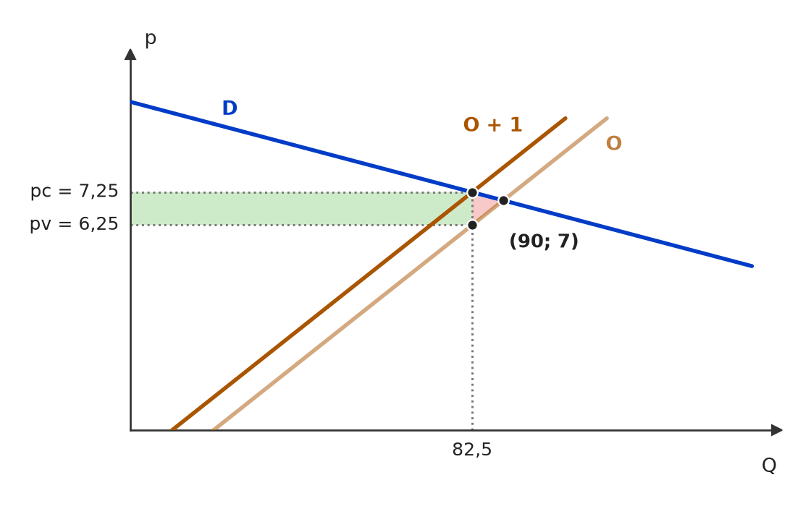 O imposto de R$ 1 eleva a oferta em 1 (O → O + 1). O equilíbrio sai de (90; 7) para Q = 82,5: o consumidor paga 7,25 (+0,25) e o produtor recebe 6,25 (−0,75). A demanda, mais elástica, empurra a maior parte do imposto para o produtor. 🧐 Dissecando a redação do item: [dado alterado · modulador absoluto] O valor 8 = 7 + 1 pressupõe repasse integral, só possível com demanda vertical ou oferta horizontal — o que as equações dadas não são. O item testa se o candidato recalcula o equilíbrio ou apenas soma o imposto. 😈 Para dificultar:
✍️ Reescrita correta: Se o governo estabelecer um imposto de R$ 1,00 por unidade vendida, o novo preço pago pelo consumidor será de R$ 7,25. |
[C/E - Nabuco › Pré-TPS/2023 › Tributos: incidência e peso morto]Em relação aos impostos indiretos sobre vendas nos mercados em concorrência perfeita, julgue o item a seguir. Item: Se, em módulo, a elasticidade-preço da oferta ao preço vigente no mercado for menor que a da demanda, o ônus decorrente de um aumento na alíquota do imposto recairá mais sobre os produtores do que sobre os consumidores. | ✅ CERTO Se, em módulo, a elasticidade-preço da oferta ao preço vigente no mercado for menor que a da demanda, o ônus decorrente de um aumento na alíquota do imposto recairá mais sobre os produtores do que sobre os consumidores. 🎯 Em poucas palavras: O ônus do imposto recai mais sobre o lado menos elástico do mercado. Oferta menos elástica que a demanda → os produtores arcam com a maior parte. 📖 Destrinchando o tema:
📈 No gráfico: 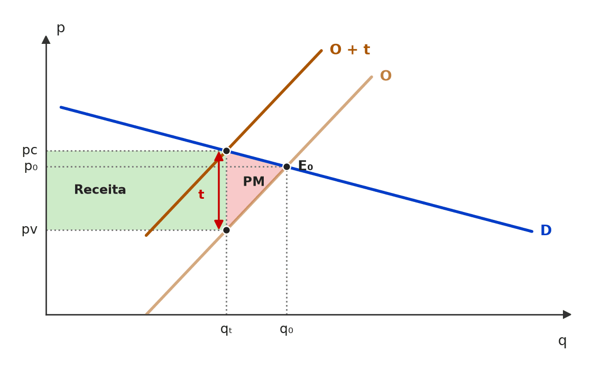 Oferta íngreme (pouco elástica) e demanda mais plana (mais elástica): o imposto t eleva pouco o preço pago pelo consumidor (p₀ → pc) e derruba muito o preço líquido recebido pelo produtor (p₀ → pv). Quem tem a curva mais inelástica arca com a maior parte do imposto. 🧐 Dissecando a redação do item: [paráfrase fiel · detalhe] O item reescreve a regra da incidência em linguagem de elasticidades “em módulo”. A armadilha é a ordem da comparação: “oferta menor que a demanda” = oferta mais inelástica. Quem lê rápido associa imposto sobre vendas a repasse ao consumidor e marca ERRADO. 😈 Para dificultar:
|
[C/E - Nabuco › Pré-TPS/2023 › Tributos: incidência e peso morto]Em relação aos impostos indiretos sobre vendas nos mercados em concorrência perfeita, julgue o item a seguir. Item: Se a curva de demanda for infinitamente elástica, o ônus da instituição de um imposto sobre vendas recairá integralmente sobre os consumidores. | ❌ ERRADO Se a curva de demanda for infinitamente elástica, o ônus da instituição de um imposto sobre vendas recairá integralmente sobre os consumidores. 🎯 Em poucas palavras: Demanda infinitamente elástica (horizontal) = consumidor que não aceita pagar um centavo a mais. O preço ao consumidor não muda e o imposto inteiro recai sobre os vendedores. 📖 Destrinchando o tema:
📈 No gráfico: 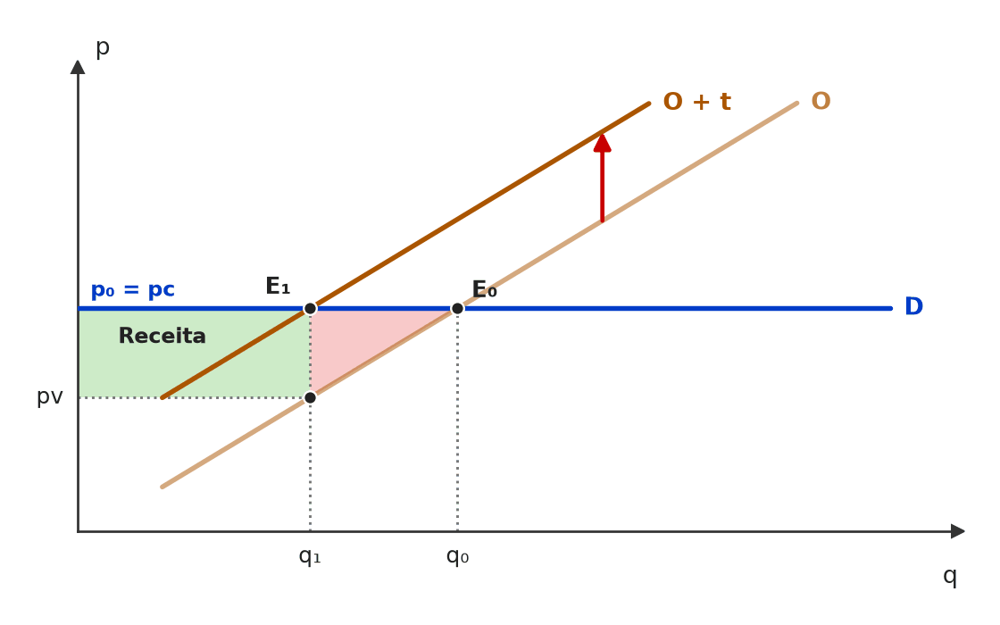 Com demanda horizontal (infinitamente elástica), o preço pago pelo consumidor não sai de p₀: o imposto desloca a oferta para cima (O → O + t), a quantidade cai e o preço líquido do vendedor cai no valor INTEIRO do imposto (p₀ → pv). 🧐 Dissecando a redação do item: [troca de ator] O item mantém o “integralmente” (correto para o caso-limite) e troca o lado que paga. Quem confunde “infinitamente elástica” com “insensível ao preço” cai: é o oposto — sensibilidade máxima. 😈 Para dificultar:
✍️ Reescrita correta: Se a curva de demanda for infinitamente elástica, o ônus da instituição de um imposto sobre vendas recairá integralmente sobre os vendedores. |
[C/E - Nabuco › Pré-TPS/2023 › Tributos: incidência e peso morto]Em relação aos impostos indiretos sobre vendas nos mercados em concorrência perfeita, julgue o item a seguir. Item: A instituição do imposto não afetará o preço e a quantidade produzida nesse mercado se a curva de oferta for infinitamente elástica. | ❌ ERRADO A instituição do imposto não afetará o preço e a quantidade produzida nesse mercado se a curva de oferta for infinitamente elástica. 🎯 Em poucas palavras: Com oferta horizontal, o preço ao consumidor sobe o valor inteiro do imposto e a quantidade cai. O único preço que não muda é o líquido recebido pelo vendedor. 📖 Destrinchando o tema:
📈 No gráfico: 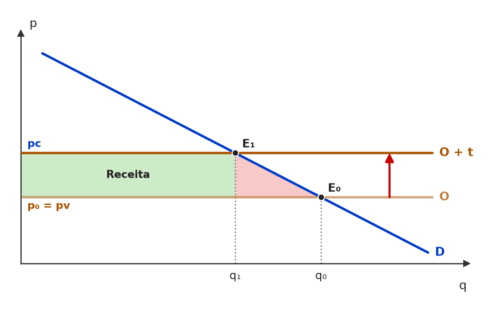 Com oferta horizontal (infinitamente elástica), o imposto desloca a oferta para cima no valor de t: o preço ao consumidor sobe o imposto inteiro (p₀ → pc) e a quantidade cai (q₀ → q₁). Preço e quantidade mudam — só o preço líquido do vendedor fica igual. 🧐 Dissecando a redação do item: [troca de conceito · nexo indevido] O item confunde “o vendedor não arca com o imposto” com “o mercado não se altera”. A pista é pedir preço e quantidade: com oferta horizontal, ambos mudam. 😈 Para dificultar:
✍️ Reescrita correta: A instituição do imposto elevará o preço ao consumidor no valor do imposto e reduzirá a quantidade produzida nesse mercado se a curva de oferta for infinitamente elástica. |
[C/E - Nabuco › Pré-TPS/2023 › Tributos: incidência e peso morto]Em relação aos impostos indiretos sobre vendas nos mercados em concorrência perfeita, julgue o item a seguir. Item: A quantidade transacionada no mercado após a instituição do imposto será tanto menor quanto mais elástica for a curva de demanda dos consumidores. | ✅ CERTO A quantidade transacionada no mercado após a instituição do imposto será tanto menor quanto mais elástica for a curva de demanda dos consumidores. 🎯 Em poucas palavras: Com demanda elástica, a mesma alta de preço provocada pelo imposto derruba muito a quantidade: o mercado encolhe mais, ceteris paribus. 📖 Destrinchando o tema:
📈 No gráfico: 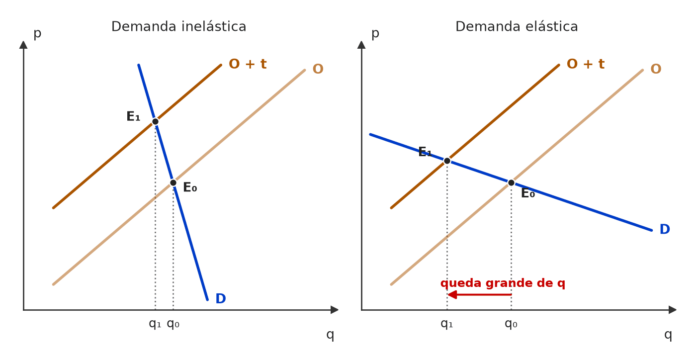 Mesma oferta, mesmo imposto t, mesmo equilíbrio inicial E₀. Com demanda inelástica (à esquerda), a quantidade quase não cai; com demanda elástica (à direita), cai muito (q₀ → q₁). Quanto mais elástica a demanda, menor a quantidade transacionada após o imposto. 🧐 Dissecando a redação do item: [paráfrase fiel · contraintuitivo] A estrutura “tanto menor quanto mais elástica” parece contradizer a regra de que o lado elástico “escapa” do imposto. Não contradiz: escapar do imposto é justamente comprar menos. 🔥 A banca alterna os dois efeitos (incidência × quantidade) no mesmo bloco. 😈 Para dificultar:
|
[C/E - Daniel – Economia CACD (Telegram) › Tributos: incidência e peso morto]Julgue o item a seguir, acerca de elasticidade, receita total e incidência tributária. Item: O ônus de um imposto recai mais intensamente no lado do mercado que é mais elástico. Quando a demanda é elástica, um aumento de preço leva a uma diminuição proporcionalmente menor da quantidade demandada, portanto a Receita Total aumenta. Quando a demanda é inelástica, um aumento de preço leva a uma diminuição proporcionalmente maior da quantidade demandada, portanto a Receita Total diminui. | ❌ ERRADO O ônus de um imposto recai mais intensamente no lado do mercado que é mais elástico. Quando a demanda é elástica, um aumento de preço leva a uma diminuição proporcionalmente menor da quantidade demandada, portanto a Receita Total aumenta. Quando a demanda é inelástica, um aumento de preço leva a uma diminuição proporcionalmente maior da quantidade demandada, portanto a Receita Total diminui. 🎯 Em poucas palavras: As três frases estão invertidas: o ônus recai no lado menos elástico; na demanda elástica a quantidade cai mais que o preço sobe e a receita cai; na inelástica, ao contrário. 📖 Destrinchando o tema:
🧐 Dissecando a redação do item: [inversão] Item “espelhado”: cada frase é a versão invertida de uma regra correta, e a coerência interna entre elas (“proporcionalmente menor… portanto aumenta”) dá falsa segurança. Basta checar a definição de elástica (reação maior) para desmontar o conjunto. 😈 Para dificultar:
✍️ Reescrita correta: O ônus de um imposto recai mais intensamente no lado do mercado que é menos elástico. Quando a demanda é elástica, um aumento de preço leva a uma diminuição proporcionalmente maior da quantidade demandada, portanto a Receita Total diminui. Quando a demanda é inelástica, um aumento de preço leva a uma diminuição proporcionalmente menor da quantidade demandada, portanto a Receita Total aumenta. |
[C/E - Prof. Rodrigo Teixeira › Tributos: incidência e peso morto]A respeito dos mercados competitivos, responda C ou E. Item: O imposto traz receita para o governo, mas esta receita não supera a perda de bem-estar de consumidores e ofertantes. | ✅ CERTO O imposto traz receita para o governo, mas esta receita não supera a perda de bem-estar de consumidores e ofertantes. 🎯 Em poucas palavras: Perda de excedentes = receita + peso morto. Como o peso morto é ≥ 0, a receita nunca supera a perda dos agentes privados. 📖 Destrinchando o tema:
📈 No gráfico: 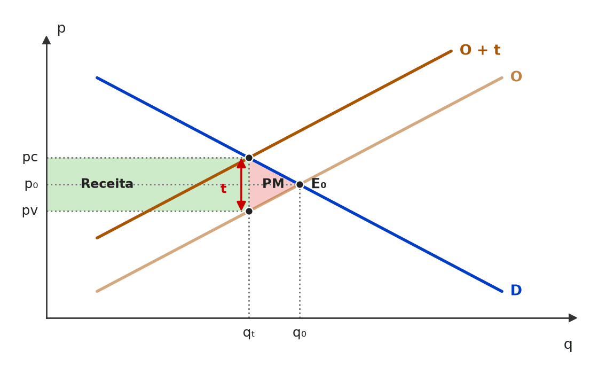 Consumidores e produtores perdem toda a faixa entre pc e pv até q₀; o governo recupera só o retângulo verde (receita). O triângulo vermelho — o peso morto — é a perda que ninguém recebe, e por isso a receita fica abaixo da perda de excedentes. 🧐 Dissecando a redação do item: [literalidade · detalhe] A formulação “não supera” (em vez de “é menor que”) deixa o item verdadeiro inclusive nos casos sem peso morto. Variante perigosa: trocar por “é sempre inferior” — aí o caso-limite derrubaria o item. 😈 Para dificultar:
|
[C/E - Prof. Rodrigo Teixeira › Tributos: incidência e peso morto]A respeito dos mercados competitivos, responda C ou E. Item: O peso morto cresce com o aumento do imposto, mas menos que proporcionalmente. | ❌ ERRADO O peso morto cresce com o aumento do imposto, mas menos que proporcionalmente. 🎯 Em poucas palavras: O peso morto é um triângulo cuja base e altura crescem com t: ele cresce com o quadrado do imposto — dobrar t quadruplica o peso morto. 📖 Destrinchando o tema:
📈 No gráfico: 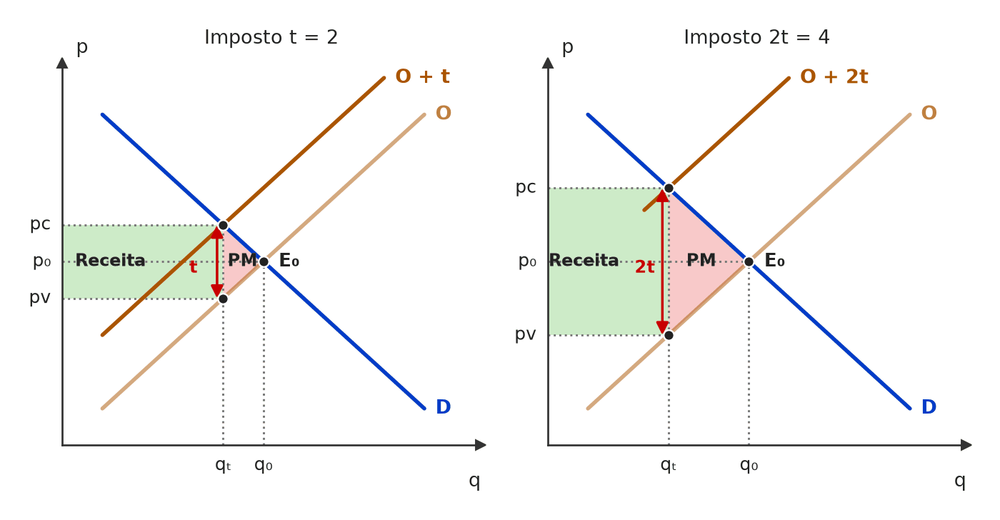 Com as mesmas curvas, dobrar o imposto (de 2 para 4) dobra a base e a altura do triângulo de peso morto: a área quadruplica (de 1 para 4). O peso morto cresce com o quadrado da alíquota. 🧐 Dissecando a redação do item: [inversão] A 1ª parte (cresce com o imposto) é verdadeira; o erro está na forma do crescimento, que é a oposta. O item pode confundir quem pensa na receita, que, essa sim, cresce menos que proporcionalmente. 😈 Para dificultar:
✍️ Reescrita correta: O peso morto cresce com o aumento do imposto, e mais que proporcionalmente (com o quadrado da alíquota). |
[C/E - Prof. Rodrigo Teixeira › Tributos: incidência e peso morto]A respeito dos mercados competitivos, responda C ou E. Item: A incidência jurídica do imposto, se é sobre consumidores ou ofertantes, pode mudar o resultado da distribuição do ônus do imposto. | ❌ ERRADO A incidência jurídica do imposto, se é sobre consumidores ou ofertantes, pode mudar o resultado da distribuição do ônus do imposto. 🎯 Em poucas palavras: A incidência econômica depende só das elasticidades. Cobrar do comprador ou do vendedor leva ao mesmo pc, ao mesmo pv e à mesma divisão do ônus. 📖 Destrinchando o tema:
🧐 Dissecando a redação do item: [nexo indevido] O “pode” (modulador relativo) costuma salvar itens; aqui não salva, porque na teoria padrão a incidência legal não tem efeito algum sobre a divisão do ônus. 🔥 Clássico de Mankiw cobrado em toda banca. 😈 Para dificultar:
✍️ Reescrita correta: A incidência jurídica do imposto, se é sobre consumidores ou ofertantes, não muda o resultado da distribuição do ônus do imposto, que depende das elasticidades da oferta e da demanda. |
[C/E - Nabuco › Tributos: incidência e peso morto]Considerando os conceitos de microeconomia, julgue o item a seguir. Item: Suponha que exista um mercado de um determinado bem em equilíbrio e que o governo, por algum motivo, resolva tributar o consumo desse bem. A intervenção geraria um “peso morto”, ou seja, o tributo reduz o excedente do consumidor e amplia o excedente do produtor. | ❌ ERRADO Suponha que exista um mercado de um determinado bem em equilíbrio e que o governo, por algum motivo, resolva tributar o consumo desse bem. A intervenção geraria um “peso morto”, ou seja, o tributo reduz o excedente do consumidor e amplia o excedente do produtor. 🎯 Em poucas palavras: O tributo reduz os dois excedentes: o consumidor paga mais, o produtor recebe menos. Parte da perda vira receita; o resto é o peso morto — que, aliás, não é definido pela redistribuição entre os dois. 📖 Destrinchando o tema:
🧐 Dissecando a redação do item: [meia-verdade · troca de conceito] O começo é certo (gera peso morto, reduz o EC); o final transforma o imposto numa transferência consumidor → produtor, como num preço mínimo. Pista: tributo tira dos dois lados; quem ganha é o fisco. 😈 Para dificultar:
✍️ Reescrita correta: Suponha que exista um mercado de um determinado bem em equilíbrio e que o governo, por algum motivo, resolva tributar o consumo desse bem. A intervenção geraria um “peso morto”, ou seja, o tributo reduz o excedente do consumidor e também reduz o excedente do produtor. |
[C/E - Nabuco › Tributos: incidência e peso morto]Com relação às intervenções governamentais no equilíbrio de mercado e ao conceito de elasticidade, julgue o item a seguir. Item: Quando a demanda de um bem é elástica, um imposto adotado pelo governo implicará maior perda de excedente do consumidor em relação à perda de excedente do produtor do referido bem. | ❌ ERRADO Quando a demanda de um bem é elástica, um imposto adotado pelo governo implicará maior perda de excedente do consumidor em relação à perda de excedente do produtor do referido bem. 🎯 Em poucas palavras: Quem perde mais é o lado menos elástico, e isso exige comparar as duas elasticidades. Demanda elástica, por si só, tende a deixar o consumidor com a menor parte, não a maior. 📖 Destrinchando o tema:
📈 No gráfico: 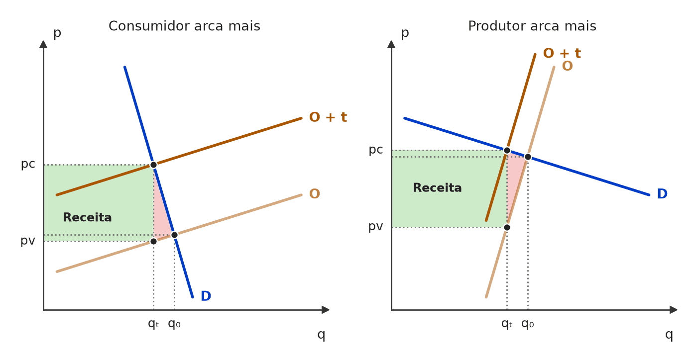 A cunha t se reparte conforme as elasticidades. À esquerda (oferta elástica, demanda inelástica), pc sobe quase t inteiro: o consumidor arca com a maior parte. À direita (oferta inelástica, demanda elástica), pv cai quase t inteiro: o produtor arca com a maior parte. 🧐 Dissecando a redação do item: [inversão · nexo indevido] O item tira uma conclusão sobre a divisão do ônus a partir de uma só elasticidade e, ainda, no sentido contrário ao intuitivo. 🔥 Incidência sempre compara as duas curvas; item que informa só uma deve ser lido com desconfiança. 😈 Para dificultar:
✍️ Reescrita correta: Quando a demanda de um bem é mais elástica que a oferta, um imposto adotado pelo governo implicará menor perda de excedente do consumidor em relação à perda de excedente do produtor do referido bem. |
[C/E - Banca não identificada › 2023 › Tributos: incidência e peso morto]Acerca da incidência de tributos sobre o consumo, e considerando que a questão se limita a mercados de concorrência perfeita, julgue (C ou E) o item a seguir. Item: Um aumento no imposto sobre o consumo de um bem com demanda perfeitamente preço-elástica e oferta preço-inelástica terá incidência apenas sobre o bem-estar dos produtores, pois os consumidores somente adquirem o bem a um preço único de equilíbrio. | ✅ CERTO Um aumento no imposto sobre o consumo de um bem com demanda perfeitamente preço-elástica e oferta preço-inelástica terá incidência apenas sobre o bem-estar dos produtores, pois os consumidores somente adquirem o bem a um preço único de equilíbrio. 🎯 Em poucas palavras: Demanda perfeitamente elástica é horizontal: os consumidores não aceitam pagar um centavo a mais. O preço ao consumidor não muda, e todo o imposto sai do preço líquido do produtor. 📖 Destrinchando o tema:
📈 No gráfico: 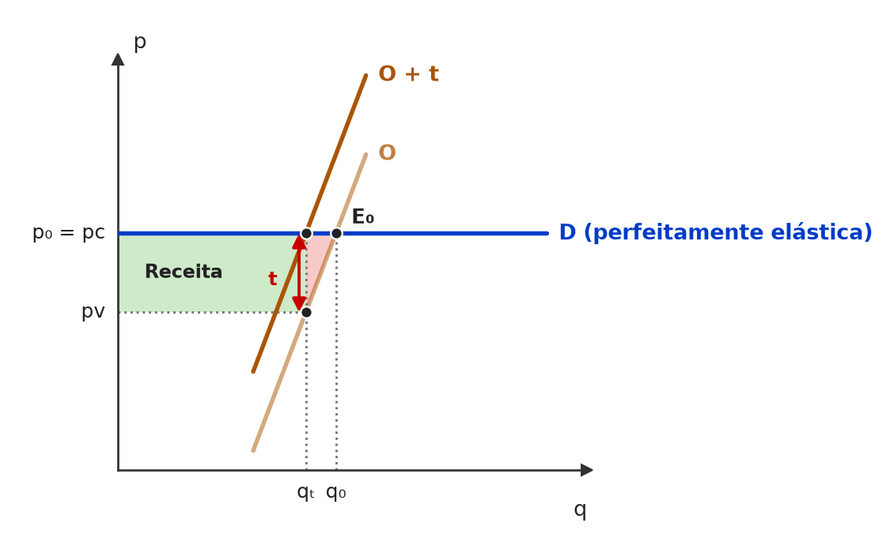 Com demanda horizontal (perfeitamente elástica), o preço ao consumidor não sai de p₀: o imposto t aparece inteiro como queda do preço recebido pelo vendedor (p₀ → pv). A receita (verde) e o peso morto (vermelho) saem do excedente do produtor. 🧐 Dissecando a redação do item: [literalidade · exceção] Dois moduladores fortes (“perfeitamente”, “apenas”) que, juntos, tornam o item verdadeiro: é o caso-limite da regra de incidência. A justificativa final (“preço único de equilíbrio”) é uma forma simples de dizer que a demanda é horizontal. Lição: “apenas” só é suspeito quando o caso não é extremo. 😈 Para dificultar:
|
[C/E - Banca não identificada › 2023 › Tributos: incidência e peso morto]Acerca da incidência de tributos sobre o consumo, e considerando que a questão se limita a mercados de concorrência perfeita, julgue (C ou E) o item a seguir. Item: Um aumento no imposto sobre o consumo de um bem cuja demanda e oferta tenham elasticidades unitárias incidirá apenas sobre o bem-estar do consumidor, pois as firmas conseguem repassar o tributo totalmente no novo preço de equilíbrio. | ❌ ERRADO Um aumento no imposto sobre o consumo de um bem cuja demanda e oferta tenham elasticidades unitárias incidirá apenas sobre o bem-estar do consumidor, pois as firmas conseguem repassar o tributo totalmente no novo preço de equilíbrio. 🎯 Em poucas palavras: Elasticidades iguais (em módulo) → ônus repartido igualmente: cerca de metade do imposto para cada lado. Repasse total exigiria demanda perfeitamente inelástica ou oferta perfeitamente elástica. 📖 Destrinchando o tema:
🧐 Dissecando a redação do item: [modulador absoluto · nexo indevido] “Apenas” e “totalmente” transformam uma repartição em transferência integral, e a justificativa (“as firmas conseguem repassar”) cria um nexo que o dado do item (elasticidades iguais) não autoriza. Pista: curvas igualmente elásticas sugerem divisão, não concentração. 😈 Para dificultar:
✍️ Reescrita correta: Um aumento no imposto sobre o consumo de um bem cuja demanda e oferta tenham elasticidades unitárias incidirá sobre o bem-estar de consumidores e de produtores, em partes aproximadamente iguais, pois as firmas conseguem repassar apenas cerca de metade do tributo no novo preço de equilíbrio. |
[C/E - Banca não identificada › 2023 › Tributos: incidência e peso morto]Acerca da incidência de tributos sobre o consumo, e considerando que a questão se limita a mercados de concorrência perfeita, julgue (C ou E) o item a seguir. Item: Um imposto sobre o consumo de produtos viciantes tem redução pequena no bem-estar dos consumidores, uma vez que a demanda desses produtos é altamente elástica. | ❌ ERRADO Um imposto sobre o consumo de produtos viciantes tem redução pequena no bem-estar dos consumidores, uma vez que a demanda desses produtos é altamente elástica. 🎯 Em poucas palavras: Produto viciante tem demanda altamente inelástica: o consumidor não consegue reduzir o consumo e absorve a maior parte do imposto — a perda de bem-estar dele é grande. 📖 Destrinchando o tema:
🧐 Dissecando a redação do item: [troca de conceito · inversão] O item atribui a bens viciantes a elasticidade oposta à verdadeira e tira dela a conclusão coerente — mas falsa. Vício → inelástica é associação automática que a banca testa nos dois sentidos. 🔥 Mesmo tema, com gabarito CERTO, em item de 2022 sobre cigarros e bebidas. 😈 Para dificultar:
✍️ Reescrita correta: Um imposto sobre o consumo de produtos viciantes tem redução grande no bem-estar dos consumidores, uma vez que a demanda desses produtos é altamente inelástica. |
[C/E - Banca não identificada › 2023 › Tributos: incidência e peso morto]Acerca da incidência de tributos sobre o consumo, e considerando que a questão se limita a mercados de concorrência perfeita, julgue (C ou E) o item a seguir. Item: Uma redução no imposto sobre o consumo de um bem com demanda preço-inelástica e oferta preço-elástica terá incidência maior sobre o bem-estar dos consumidores do que sobre o bem-estar das firmas. | ✅ CERTO Uma redução no imposto sobre o consumo de um bem com demanda preço-inelástica e oferta preço-elástica terá incidência maior sobre o bem-estar dos consumidores do que sobre o bem-estar das firmas. 🎯 Em poucas palavras: A regra de incidência vale nos dois sentidos: o lado menos elástico arca com a maior parte de um aumento e se apropria da maior parte de uma redução. Aqui, o consumidor. 📖 Destrinchando o tema:
🧐 Dissecando a redação do item: [contraintuitivo · paráfrase fiel] O item troca o habitual “aumento” por “redução” e fala em “incidência” de um benefício, o que causa estranheza; quem lembra que a regra é simétrica julga rápido. Os dois dados (demanda inelástica, oferta elástica) apontam para o mesmo lado. 😈 Para dificultar:
|
❌ [C/E - Banca não identificada › 2022 › Tributos: incidência e peso morto]Acerca dos efeitos da tributação sobre o bem-estar, julgue o item. Item: Tributos mais altos em bens que causam vício, como cigarros e bebidas alcoólicas, têm a quase-totalidade de seu efeito sobre o bem-estar do consumidor. | ✅ CERTO Tributos mais altos em bens que causam vício, como cigarros e bebidas alcoólicas, têm a quase-totalidade de seu efeito sobre o bem-estar do consumidor. 🎯 Em poucas palavras: Vício = demanda muito inelástica. O ônus do tributo recai sobre o lado menos elástico do mercado: o consumidor. 📖 Destrinchando o tema:
📈 No gráfico: 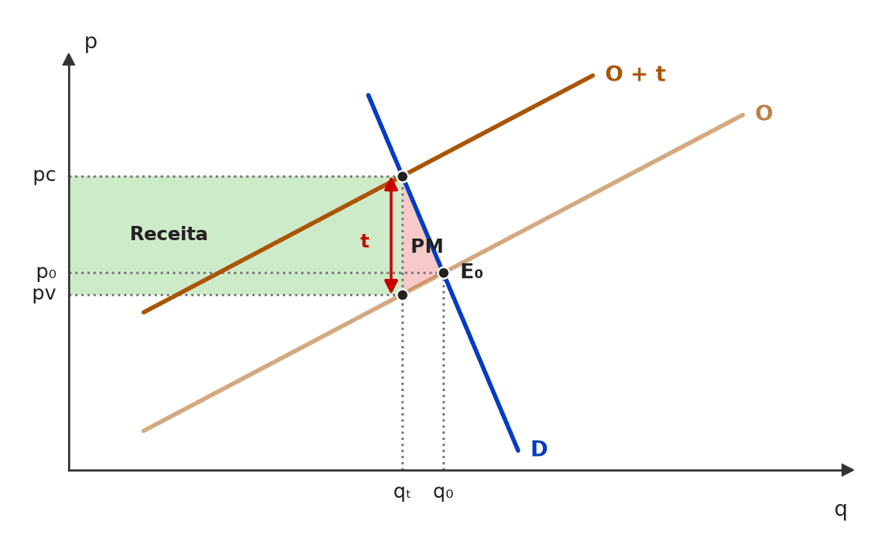 Demanda muito inelástica (quase vertical): o imposto t eleva o preço pago pelo consumidor (p₀ → pc) quase no valor inteiro de t, enquanto o preço recebido pelo vendedor quase não cai (p₀ → pv). O ônus fica com quem não consegue fugir do consumo. 🧐 Dissecando a redação do item: [paráfrase fiel · detalhe] O item não menciona elasticidade: a banca espera que o candidato traduza “vício” em “demanda inelástica”. O “quase-totalidade” é modulador relativo — admite que o produtor arca com um pouco —, e por isso o item se sustenta. 🔥 Par recorrente: bens viciantes × incidência. 😈 Para dificultar:
|
❌ [C/E - Banca não identificada › Tributos: incidência e peso morto]Supondo que o governo adote um novo imposto específico sobre a venda de um bem em um mercado de concorrência perfeita e considerando a distribuição da incidência tributária entre vendedores e consumidores, julgue o item a seguir. Item: Se a elasticidade-preço da demanda for infinita, os vendedores abandonarão o mercado. | ❌ ERRADO Se a elasticidade-preço da demanda for infinita, os vendedores abandonarão o mercado. 🎯 Em poucas palavras: Com demanda infinitamente elástica (horizontal), o preço ao consumidor não sobe: o vendedor arca com todo o imposto e a quantidade cai — mas o mercado continua existindo. 📖 Destrinchando o tema:
📈 No gráfico: 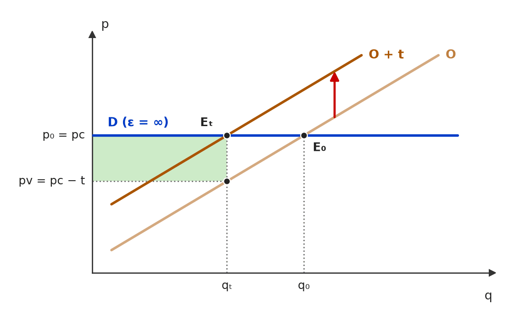 Com demanda horizontal, o preço ao consumidor não pode subir: o imposto t desloca a oferta para cima, a quantidade cai de q₀ para qₜ e o preço recebido pelo vendedor cai exatamente t. O vendedor arca com todo o imposto, mas o mercado continua existindo. 🧐 Dissecando a redação do item: [extrapolação] O ponto de partida é certo (o vendedor fica com todo o ônus), mas o item salta para uma consequência extrema que não decorre do modelo. Quem lembra que “o produtor perde tudo” confunde ônus integral com saída do mercado. 😈 Para dificultar:
✍️ Reescrita correta: Se a elasticidade-preço da demanda for infinita, os vendedores arcarão com todo o peso do imposto, e a quantidade transacionada diminuirá. |
[C/E - Banca não identificada › Tributos: incidência e peso morto]Supondo que o governo adote um novo imposto específico sobre a venda de um bem em um mercado de concorrência perfeita e considerando a distribuição da incidência tributária entre vendedores e consumidores, julgue o item a seguir. Item: Vendedores e consumidores arcarão com o peso do imposto, conforme a sensibilidade das curvas de oferta e demanda às variações de preço. | ✅ CERTO Vendedores e consumidores arcarão com o peso do imposto, conforme a sensibilidade das curvas de oferta e demanda às variações de preço. 🎯 Em poucas palavras: É a definição de incidência econômica: o imposto se divide entre os dois lados na proporção inversa das elasticidades (a “sensibilidade às variações de preço”). 📖 Destrinchando o tema:
🧐 Dissecando a redação do item: [literalidade · paráfrase fiel] Reescreve a regra trocando “elasticidade” por “sensibilidade às variações de preço”. A paráfrase é o único obstáculo: quem procura a palavra técnica pode estranhar. 😈 Para dificultar:
|
❌ [C/E - Banca não identificada › Tributos: incidência e peso morto]Supondo que o governo adote um novo imposto específico sobre a venda de um bem em um mercado de concorrência perfeita e considerando a distribuição da incidência tributária entre vendedores e consumidores, julgue o item a seguir. Item: Vendedores irão transferir aos compradores o valor relativo a toda incidência do novo imposto, o que aumentará o preço do bem. | ❌ ERRADO Vendedores irão transferir aos compradores o valor relativo a toda incidência do novo imposto, o que aumentará o preço do bem. 🎯 Em poucas palavras: Repasse integral só ocorre em casos-limite (demanda perfeitamente inelástica ou oferta perfeitamente elástica). Sem essa hipótese, o preço sobe menos que o imposto e o vendedor absorve parte. 📖 Destrinchando o tema:
🧐 Dissecando a redação do item: [modulador absoluto · meia-verdade] O preço sobe (verdade), mas não no valor inteiro do imposto. O absoluto “toda” transforma um caso-limite em regra. 🔥 Itens de incidência sem elasticidade informada quase sempre pedem a regra geral de partilha. 😈 Para dificultar:
✍️ Reescrita correta: Vendedores irão transferir aos compradores apenas parte do novo imposto, o que aumentará o preço do bem em montante inferior ao do tributo. |
❌ [C/E - Banca não identificada › Tributos: incidência e peso morto]Supondo que o governo adote um novo imposto específico sobre a venda de um bem em um mercado de concorrência perfeita e considerando a distribuição da incidência tributária entre vendedores e consumidores, julgue o item a seguir. Item: Quanto menor for a elasticidade-preço da demanda, maior será a incidência do tributo para os consumidores. | ✅ CERTO Quanto menor for a elasticidade-preço da demanda, maior será a incidência do tributo para os consumidores. 🎯 Em poucas palavras: Demanda menos elástica = consumidor com menos alternativas: ele aceita pagar mais, e a parcela do imposto que recai sobre ele aumenta. 📖 Destrinchando o tema:
🧐 Dissecando a redação do item: [literalidade] Relação monotônica correta (menos elástico → paga mais). O risco é a inversão mental de “menor”, ou o tropeço no sinal negativo da elasticidade. 😈 Para dificultar:
|
[C/E - Banca não identificada › Tributos: incidência e peso morto]Julgue o item a seguir, relativo à incidência de tributos e ao peso morto. Item: A tributação afeta diretamente a eficiência de Pareto porque altera os incentivos de mercado. | ✅ CERTO A tributação afeta diretamente a eficiência de Pareto porque altera os incentivos de mercado. 🎯 Em poucas palavras: Tributos sobre bens, renda ou produção criam uma cunha entre o preço pago pelo comprador e o recebido pelo vendedor; os agentes reagem, trocas vantajosas deixam de ocorrer e surge peso morto. 📖 Destrinchando o tema:
🧐 Dissecando a redação do item: [modulador relativo] O verbo neutro “afeta” (e não “reduz”) salva o item das exceções. Se a banca escrevesse “toda tributação reduz a eficiência”, a pigouviana e a lump-sum o tornariam ERRADO. 😈 Para dificultar:
|
[C/E - Banca não identificada › Tributos: incidência e peso morto]Julgue o item a seguir, relativo à incidência de tributos e ao peso morto. Item: O governo decide criar um imposto sobre um determinado produto. Considerando-se a elasticidade com relação ao preço, se a demanda for menos elástica do que a oferta, a carga tributária recairá principalmente sobre os compradores. | ✅ CERTO O governo decide criar um imposto sobre um determinado produto. Considerando-se a elasticidade com relação ao preço, se a demanda for menos elástica do que a oferta, a carga tributária recairá principalmente sobre os compradores. 🎯 Em poucas palavras: A incidência econômica recai mais sobre o lado menos elástico: compradores pouco sensíveis ao preço não conseguem “fugir” do imposto e absorvem a maior parte da cunha. 📖 Destrinchando o tema:
📈 No gráfico: 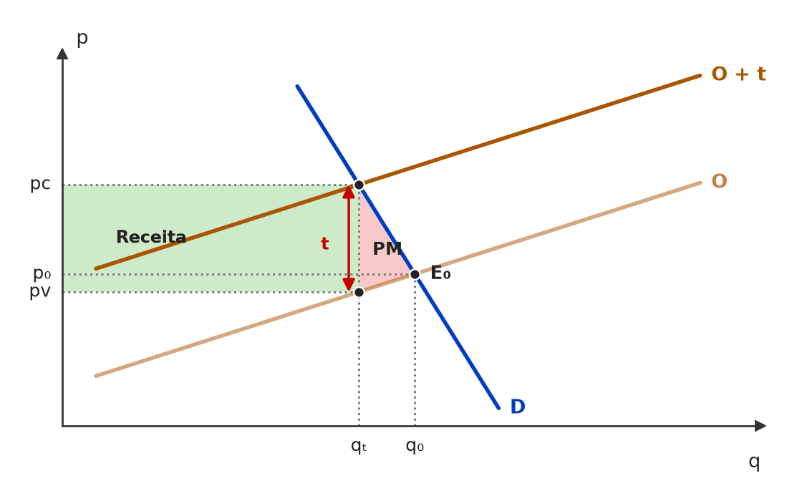 Demanda inelástica (íngreme) e oferta elástica (plana): o imposto t eleva muito o preço pago pelo comprador (p₀ → pc) e reduz pouco o recebido pelo vendedor (p₀ → pv). A maior parte da cunha fica com o comprador. 🧐 Dissecando a redação do item: [paráfrase fiel] Regra de manual (Mankiw, capítulo sobre oferta, demanda e políticas do governo) em redação direta. O risco é confundir incidência econômica com legal e responder “recai sobre quem recolhe” — o item nem diz quem recolhe, o que confirma que a resposta depende só das elasticidades. 😈 Para dificultar:
|
[C/E - Banca não identificada › Tributos: incidência e peso morto]Julgue o item a seguir, relativo à incidência de tributos e ao peso morto. Item: Um imposto constitui um peso-morto porque afeta as decisões de compradores e vendedores. Em vista disso, conclui-se que quanto maiores forem as elasticidades da oferta e da demanda, maior será o peso morto de um imposto. | ✅ CERTO Um imposto constitui um peso-morto porque afeta as decisões de compradores e vendedores. Em vista disso, conclui-se que quanto maiores forem as elasticidades da oferta e da demanda, maior será o peso morto de um imposto. 🎯 Em poucas palavras: O peso morto nasce da redução da quantidade transacionada. Quanto mais elásticas as curvas, mais compradores e vendedores reagem à cunha do imposto, mais a quantidade cai — e maior a perda. 📖 Destrinchando o tema:
📈 No gráfico: 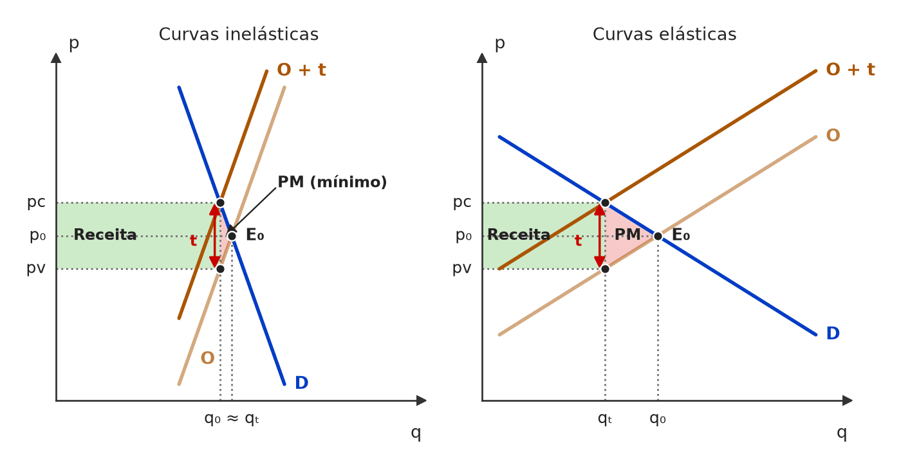 O mesmo imposto t sobre curvas íngremes (inelásticas) quase não reduz a quantidade, e o peso morto (PM) é um triângulo fino; sobre curvas planas (elásticas), a quantidade cai muito e o PM fica bem maior. 🧐 Dissecando a redação do item: [literalidade] Paráfrase direta da conclusão de Mankiw no capítulo sobre os custos da tributação. A premissa (“porque afeta as decisões”) já entrega o raciocínio: mais reação = mais distorção. O item irmão usa a mesma premissa para uma conclusão falsa sobre subsídios. 😈 Para dificultar:
|
[C/E - Banca não identificada › Tributos: incidência e peso morto]Julgue o item a seguir, relativo à incidência de tributos e ao peso morto. Item: À medida que se aumentam as alíquotas de um imposto sobre as vendas, o peso-morto do produtor diminui. | ❌ ERRADO À medida que se aumentam as alíquotas de um imposto sobre as vendas, o peso-morto do produtor diminui. 🎯 Em poucas palavras: Alíquota maior → cunha maior → quantidade menor → peso morto maior, inclusive a parcela que cabe ao produtor. O peso morto cresce aproximadamente com o quadrado da alíquota. 📖 Destrinchando o tema:
📈 No gráfico: 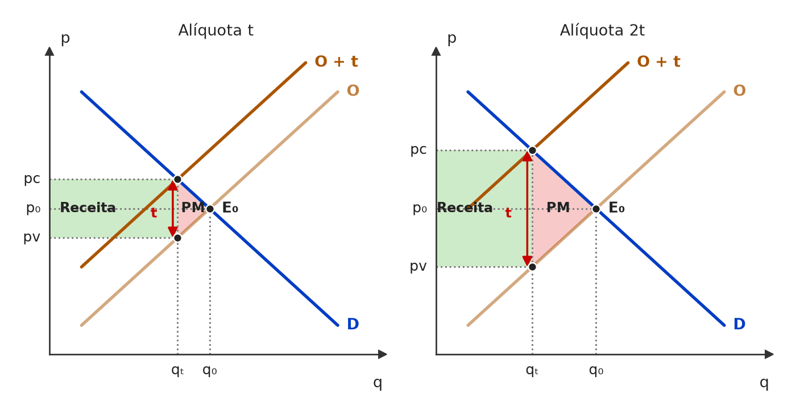 Com as mesmas curvas, dobrar a alíquota (t → 2t) dobra a base e a altura do triângulo do peso morto (PM): a perda de eficiência quadruplica, e a fatia que cabe ao produtor cresce junto. 🧐 Dissecando a redação do item: [inversão] O item inverte a relação entre alíquota e distorção. A expressão “peso-morto do produtor” é incomum e pode confundir; ela designa a parte da perda de eficiência que corresponde ao produtor (área E), que cresce junto com o total. 😈 Para dificultar:
✍️ Reescrita correta: À medida que se aumentam as alíquotas de um imposto sobre as vendas, o peso-morto do produtor aumenta. |
[C/E - Banca não identificada › Tributos: incidência e peso morto]Julgue o item a seguir, relativo à incidência de tributos e ao peso morto. Item: Quando a oferta de um bem é mais elástica à variação do preço do que a demanda (preço-inelástica), a incidência tributária recai mais pesadamente sobre os produtores do que sobre os consumidores. | ❌ ERRADO Quando a oferta de um bem é mais elástica à variação do preço do que a demanda (preço-inelástica), a incidência tributária recai mais pesadamente sobre os produtores do que sobre os consumidores. 🎯 Em poucas palavras: Demanda inelástica e oferta elástica: quem tem menos alternativa é o consumidor, e é sobre ele que recai a maior parte do imposto. 📖 Destrinchando o tema:
📈 No gráfico: 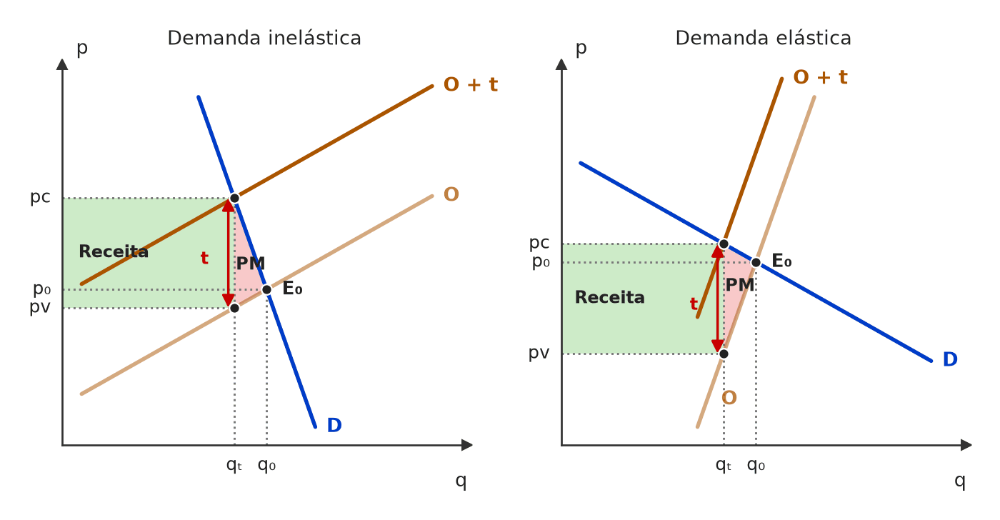 Mesmo imposto t nos dois painéis. À esquerda (demanda inelástica, oferta elástica), quase toda a cunha aparece como alta de pc: o consumidor paga. À direita (demanda elástica, oferta inelástica), a cunha aparece como queda de pv: o produtor paga. 🧐 Dissecando a redação do item: [inversão · troca de ator] Premissas corretas, conclusão com os atores trocados. O parêntese “(preço-inelástica)” em posição ambígua é um distrator: refere-se à demanda. 🔥 Itens irmãos de incidência só mudam qual curva é elástica e quem paga — monte a frase-regra antes de ler o item. 😈 Para dificultar:
✍️ Reescrita correta: Quando a oferta de um bem é mais elástica à variação do preço do que a demanda (preço-inelástica), a incidência tributária recai mais pesadamente sobre os consumidores do que sobre os produtores. |
[C/E - Banca não identificada › Tributos: incidência e peso morto]Julgue o item a seguir, relativo à incidência de tributos e ao peso morto. Item: Quando a demanda por um bem é mais elástica à variação do preço do que a oferta (preço-inelástica), a incidência tributária recai mais pesadamente sobre os produtores do que sobre os consumidores. | ✅ CERTO Quando a demanda por um bem é mais elástica à variação do preço do que a oferta (preço-inelástica), a incidência tributária recai mais pesadamente sobre os produtores do que sobre os consumidores. 🎯 Em poucas palavras: Demanda elástica e oferta inelástica: o consumidor foge do imposto trocando de produto; o produtor, sem alternativa, absorve a maior parte da cunha com queda do preço recebido. 📖 Destrinchando o tema:
📈 No gráfico: 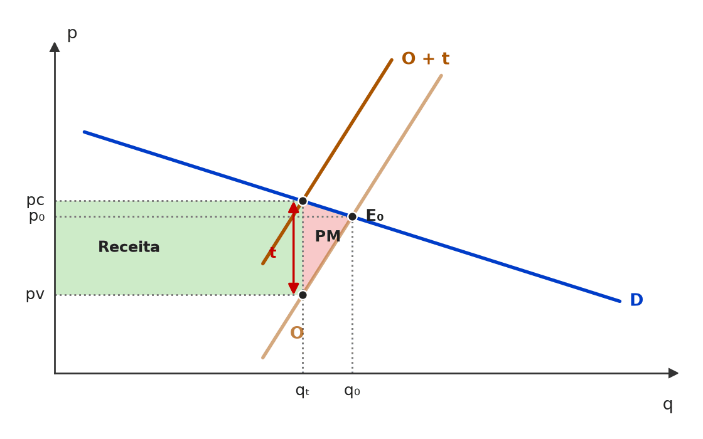 Demanda elástica (plana) e oferta inelástica (íngreme): o preço pago pelo comprador sobe pouco (p₀ → pc), e o recebido pelo vendedor despenca (p₀ → pv). Quem não consegue fugir do imposto — aqui, o produtor — arca com a maior parte. 🧐 Dissecando a redação do item: [paráfrase fiel] Item espelho do irmão ERRADO: aqui a curva elástica é a demanda e o parêntese “(preço-inelástica)” qualifica a oferta. A conclusão (produtores) bate com a regra. Leia o parêntese como pertencendo ao termo imediatamente anterior. 😈 Para dificultar:
|
[C/E - Banca não identificada › Tributos: incidência e peso morto]Julgue o item a seguir, relativo à incidência de tributos em mercados competitivos. Item: A incidência de um imposto sobre vendas em um mercado de concorrência perfeita é integralmente suportada pelos consumidores, independentemente da elasticidade-preço da demanda do bem. | ❌ ERRADO A incidência de um imposto sobre vendas em um mercado de concorrência perfeita é integralmente suportada pelos consumidores, independentemente da elasticidade-preço da demanda do bem. 🎯 Em poucas palavras: A incidência econômica de um imposto se reparte entre compradores e vendedores conforme as elasticidades da demanda e da oferta; o repasse integral ao consumidor é caso-limite, não regra. 📖 Destrinchando o tema:
🧐 Dissecando a redação do item: [modulador absoluto · contradição] Dois absolutos empilhados — “integralmente” e “independentemente da elasticidade” — negam justamente a variável que decide a incidência. Em itens de tributo, “independentemente da elasticidade” é quase sempre o sinal do erro. 😈 Para dificultar:
✍️ Reescrita correta: A incidência de um imposto sobre vendas em um mercado de concorrência perfeita é repartida entre consumidores e vendedores, conforme as elasticidades-preço da demanda e da oferta do bem. |
[C/E - Banca não identificada › Tributos: incidência e peso morto]Julgue o item a seguir, relativo à incidência de tributos em mercados competitivos. Item: Com relação à incidência de um imposto sobre vendas de um bem X num mercado em concorrência perfeita, é correto afirmar que o ônus do imposto recai mais fortemente sobre os vendedores ou consumidores dependendo do valor das respectivas elasticidades-preço. | ✅ CERTO Com relação à incidência de um imposto sobre vendas de um bem X num mercado em concorrência perfeita, é correto afirmar que o ônus do imposto recai mais fortemente sobre os vendedores ou consumidores dependendo do valor das respectivas elasticidades-preço. 🎯 Em poucas palavras: É a regra geral da incidência: o ônus pesa mais sobre o lado menos elástico — vendedores, se a oferta for mais rígida; consumidores, se a demanda for. 📖 Destrinchando o tema:
🧐 Dissecando a redação do item: [literalidade · modulador relativo] Reproduz a regra do manual. O “mais fortemente” protege o item: não diz que um lado paga tudo, só que pesa mais sobre um deles conforme as elasticidades. 😈 Para dificultar:
|
[C/E - Banca não identificada › Tributos: incidência e peso morto]Julgue o item a seguir, relativo à eficiência dos tributos. Item: Do ponto de vista econômico, impostos eficientes são aqueles que incidem com uma carga maior sobre produtos com demanda ou oferta inelástica. | ✅ CERTO Do ponto de vista econômico, impostos eficientes são aqueles que incidem com uma carga maior sobre produtos com demanda ou oferta inelástica. 🎯 Em poucas palavras: Imposto eficiente é o que gera pouco peso morto, e o peso morto nasce da queda da quantidade. Onde demanda ou oferta é inelástica, a quantidade quase não reage: tributa-se sem distorcer. 📖 Destrinchando o tema:
🧐 Dissecando a redação do item: [contraintuitivo] Soa injusto “carregar” mais nos bens essenciais, e o candidato tende a marcar ERRADO por equidade. Mas o item restringe o critério: “do ponto de vista econômico” e “eficientes” — eficiência, não justiça. 😈 Para dificultar:
🃏 Carta na manga:
|
[C/E - Banca não identificada › Tributos: incidência e peso morto]Julgue o item a seguir, relativo aos efeitos dos impostos sobre o equilíbrio de mercado. Item: Os impostos desencorajam a atividade do mercado pois quando um bem é tributado, a quantidade vendida desse bem é menor no novo equilíbrio. | ✅ CERTO Os impostos desencorajam a atividade do mercado pois quando um bem é tributado, a quantidade vendida desse bem é menor no novo equilíbrio. 🎯 Em poucas palavras: O imposto cria uma cunha entre o preço do comprador e o do vendedor: o primeiro sobe, o segundo cai, e ambos reduzem a quantidade — o mercado encolhe. 📖 Destrinchando o tema:
📈 No gráfico:  O imposto t desloca a oferta para cima (O → O + t): a quantidade cai de q₀ para qₜ, o comprador paga pc > p₀ e o vendedor recebe pv < p₀. Parte do excedente vira receita (retângulo); o triângulo é o peso morto das trocas que deixaram de ocorrer. 🧐 Dissecando a redação do item: [literalidade] Paráfrase direta do manual. O risco é a desconfiança com o “desencorajam a atividade”, que soa opinativo: tecnicamente, é só outra forma de dizer que qₜ < q₀. 😈 Para dificultar:
|
[C/E - Banca não identificada › Tributos: incidência e peso morto]Julgue o item a seguir, relativo aos efeitos dos impostos sobre o equilíbrio de mercado. Item: Quando o governo impõe um imposto sobre os consumidores, a curva de demanda se move para a esquerda e para baixo, indicando uma retração. | ✅ CERTO Quando o governo impõe um imposto sobre os consumidores, a curva de demanda se move para a esquerda e para baixo, indicando uma retração. 🎯 Em poucas palavras: Cobrado do comprador, o imposto reduz em t o que ele aceita pagar ao vendedor: a demanda desce t (D → D − t), para baixo e para a esquerda. 📖 Destrinchando o tema:
📈 No gráfico: 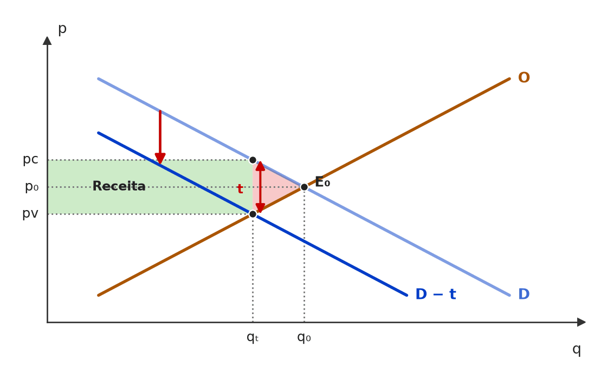 Cobrado do comprador, o imposto desloca a demanda para baixo em t (D → D − t): o vendedor passa a receber pv e o comprador paga pc = pv + t. Mesma cunha, mesma quantidade qₜ e mesmo peso morto do imposto cobrado do vendedor. 🧐 Dissecando a redação do item: [literalidade · detalhe] O item testa qual curva se move conforme o lado tributado. A pegadinha clássica é trocar a curva (“a oferta se desloca”) ou concluir que, por ser cobrado do consumidor, só ele perde. 😈 Para dificultar:
|